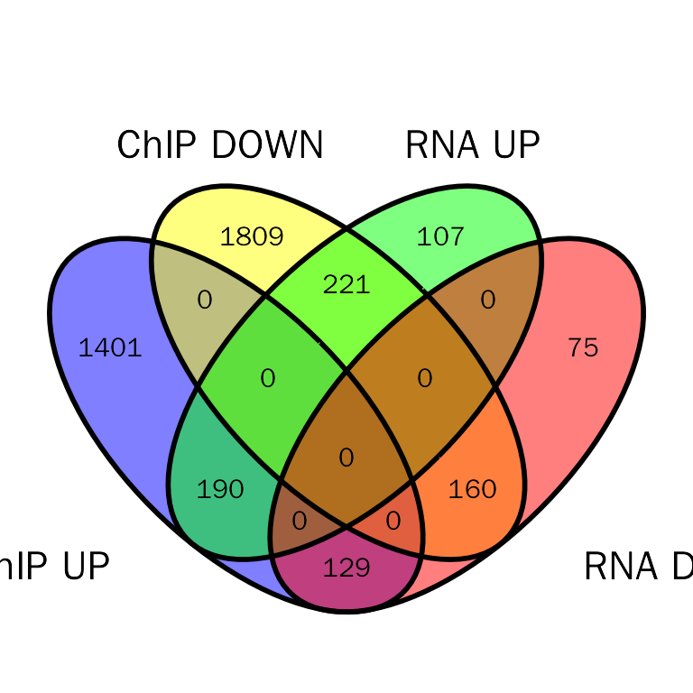
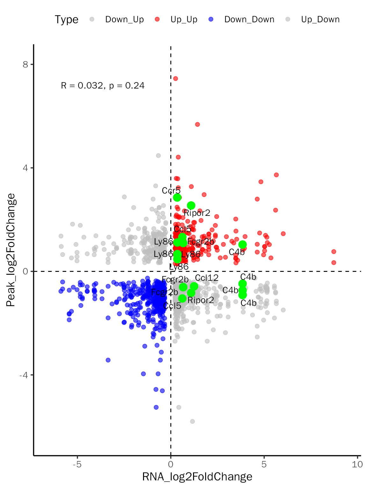
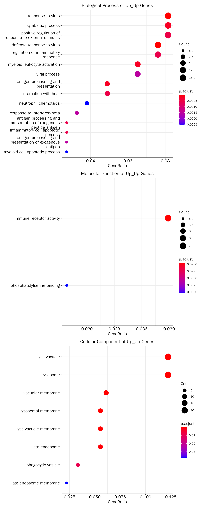
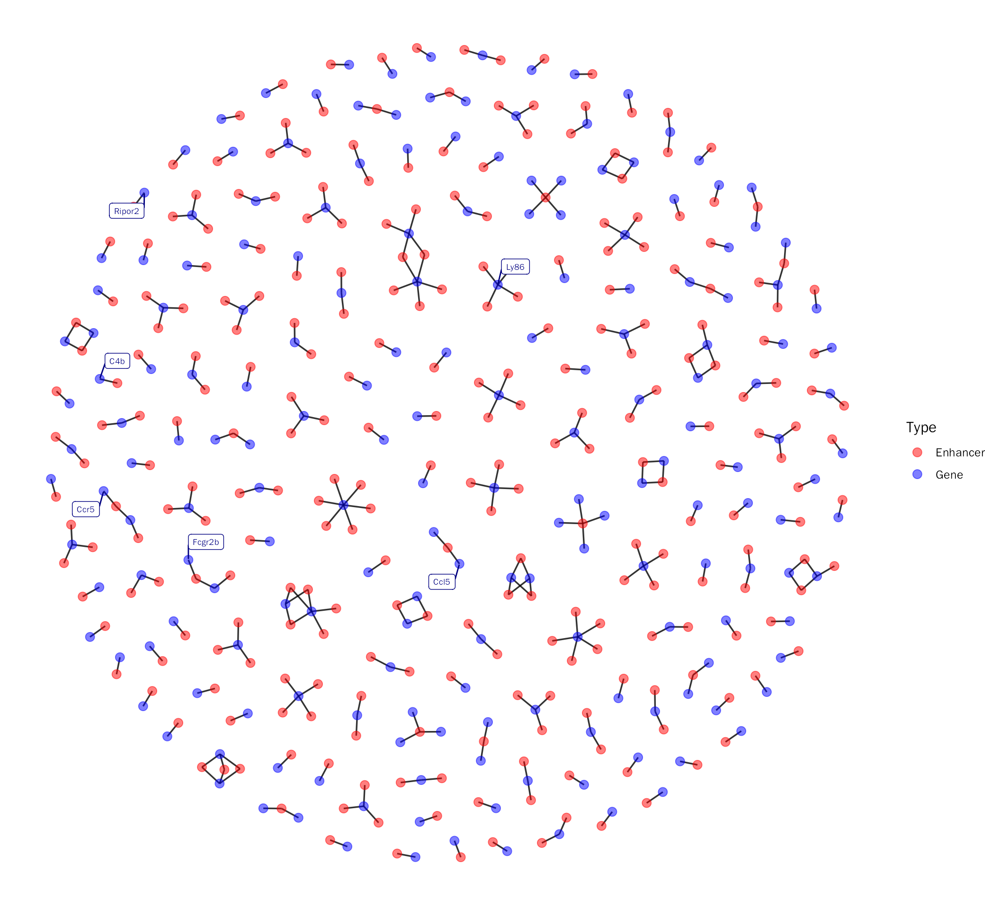
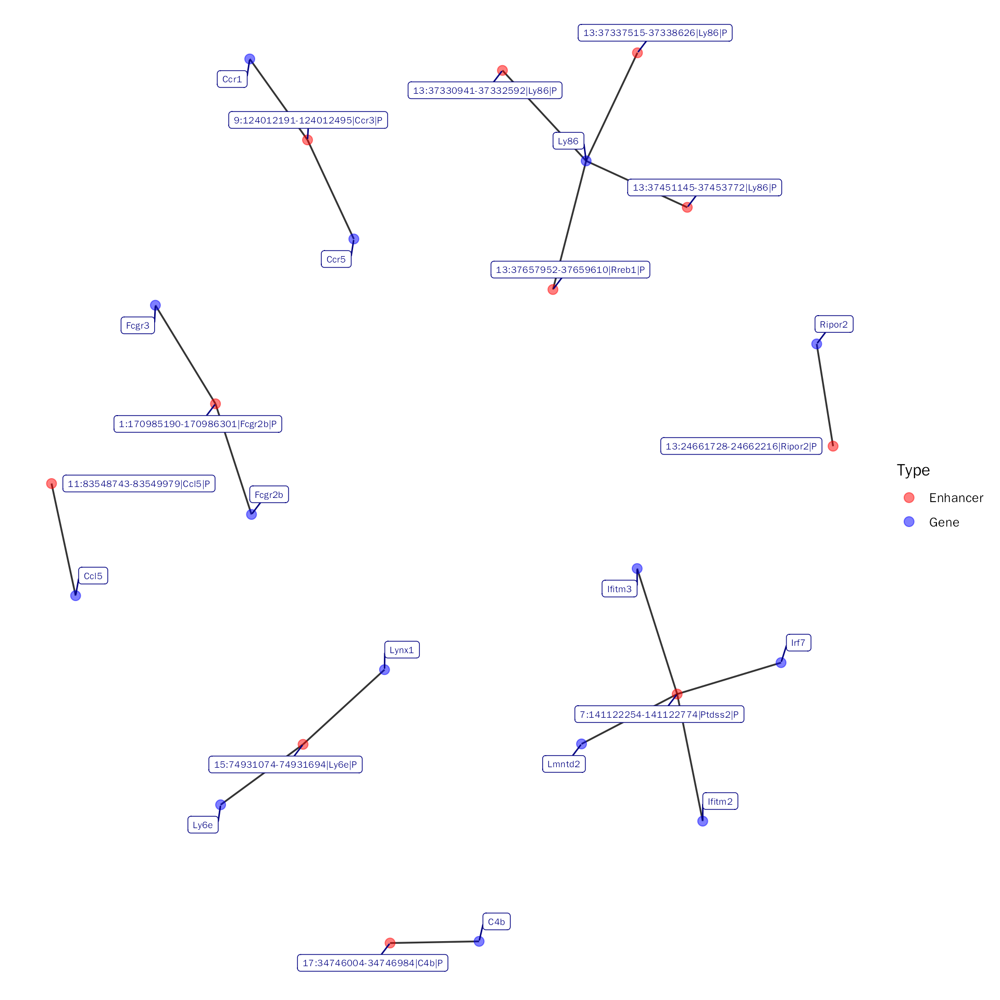
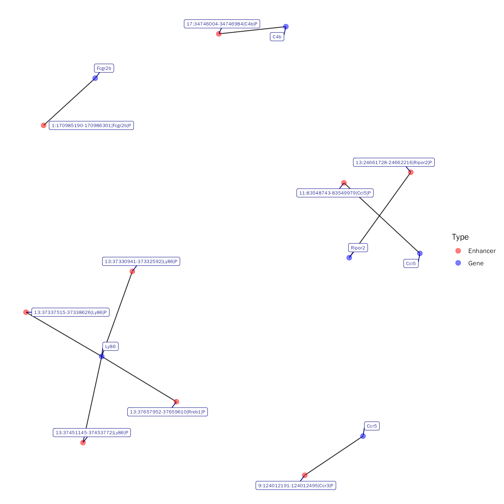
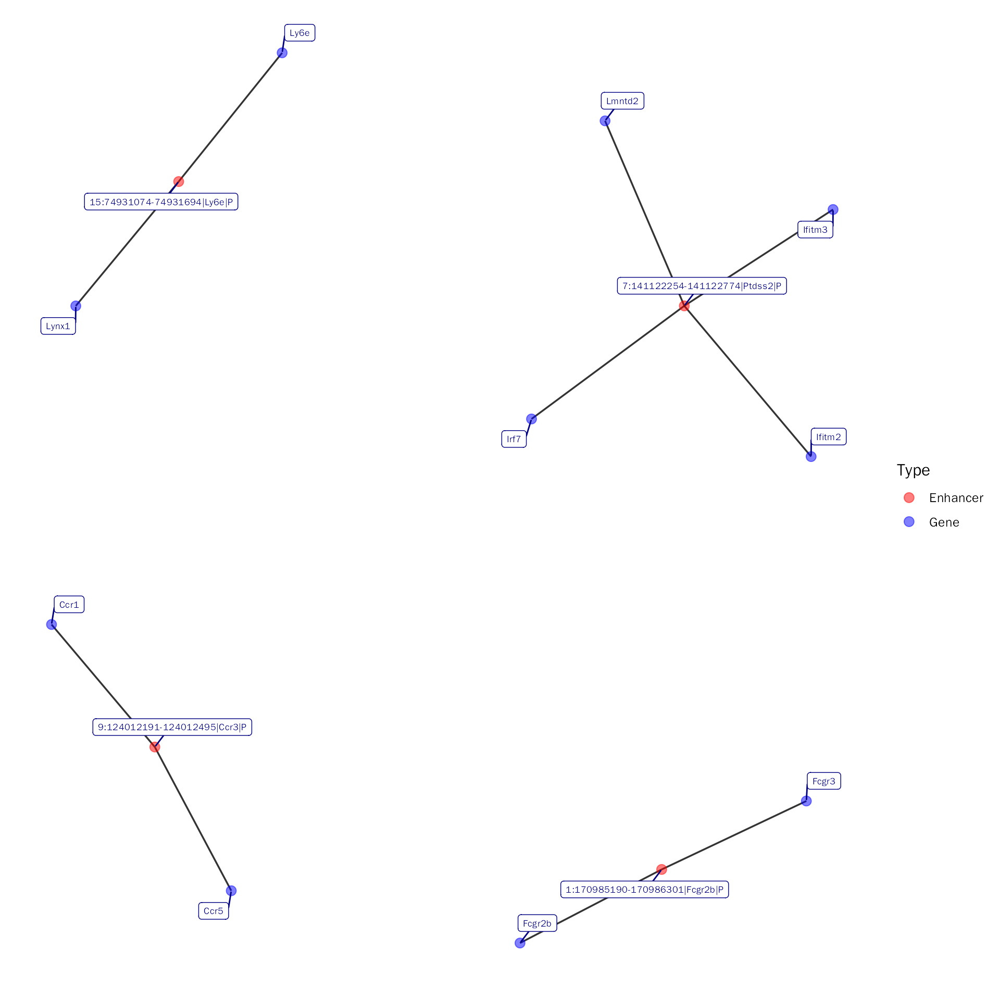

IntegrateChIPDE.RmdThe gene expression can also be regulated by cis-regulatory elements, such as enhancers. Different from promoters which are typically located directly upstream or downstream of the transcription initiation sites (TSSs), enhancers can act independent of orientation, distance, and location with respect to the target gene and can be located over as much as a million base pairs away. This characteristic determines that annotating peak to its nearest gene for analysis is inaccurate. Here, we adopted the following strategies:
The data used here are from Persistent Alterations in Microglial Enhancers in a Model of Chronic Pain:
To perform differential binding analysis, we need to prepare count matrix of ChIP-seq samples. DEbPeak provides PeakMatrix to do this, it contains two steps:
DiffBind
ChIPseeker (in the downstream analysis, we will not use this information)
chip.peak.meta.file = system.file("extdata", "enhancer_ChIP_peak_meta.txt", package = "DEbPeak")
# this will save count matrix, annotated results and peak sample metadata to consensus_peak_matrix.txt, consensus_peak_anno.txt and peak_metadata.txt
peak.matrix.list = PeakMatrix(meta.file = chip.peak.meta.file, species = "Mouse", seq.style = "Ensembl",
summits = 0, up.dist = 250000, down.dist = 250000)To simplify the steps of obtaining differential expression analysis results, DEbPeak provides ConductDESeq2 to perfrom all steps of differential expression analysis, including quality control, principal component analysis, differential expression analysis and functional enrichment analysis.
In this step, we will perform differetial expression analysis for RNA-seq:
count.matrix.file <- system.file("extdata", "enhancer_RNA_count.txt", package = "DEbPeak")
meta.info.file <- system.file("extdata", "enhancer_RNA_meta.txt", package = "DEbPeak")
gmt.file <- system.file("extdata", "m5.go.bp.v2022.1.Mm.entrez.gmt", package = "DEbPeak")
ConductDESeq2(count.matrix.file = count.matrix.file, meta.file = meta.info.file, data.type = "RNA",
gene.type = "ENSEMBL", outlier.detection = F, min.count = 10,
group.key = "condition", ref.group = "SHAM",
out.folder = '/home/songyabing/R/learn/tmp/DEbPeak/enhancer/RNA-seq',
signif = "padj", signif.threshold = 0.05, l2fc.threshold = 0, gmt.file = gmt.file)The structure of result directory:
tree /home/songyabing/R/learn/tmp/DEbPeak/enhancer/RNA-seq## /home/songyabing/R/learn/tmp/DEbPeak/enhancer/RNA-seq
## ├── CountQC_CPM.pdf
## ├── CountQC_saturation.pdf
## ├── DA
## │ ├── Condition_SNL_SHAM_all.csv
## │ ├── Condition_SNL_SHAM_padj0.05_FC0.csv
## │ ├── DA_GenePlot.pdf
## │ ├── DA_Heatmap.pdf
## │ ├── DA_MAPlot.pdf
## │ ├── DA_RankPlot.pdf
## │ ├── DA_ScatterPlot.pdf
## │ ├── DA_VolcanoPlot.pdf
## │ └── normalized_counts.csv
## ├── FE
## │ ├── DOWN_ALL_GO.csv
## │ ├── DOWN_Biological_Process.png
## │ ├── DOWN_Cellular_Component.png
## │ ├── DOWN_Functional_Enrichment.pdf
## │ ├── DOWN_KEGG.csv
## │ ├── DOWN_KEGG_Enrichment.png
## │ ├── DOWN_Molecular_Function.png
## │ ├── UP_ALL_GO.csv
## │ ├── UP_Biological_Process.png
## │ ├── UP_Cellular_Component.png
## │ ├── UP_Functional_Enrichment.pdf
## │ ├── UP_KEGG.csv
## │ ├── UP_KEGG_Enrichment.png
## │ └── UP_Molecular_Function.png
## ├── GSEA
## │ └── GSEA_enrich_result.csv
## ├── PCA
## │ ├── PC1
## │ │ ├── Negative
## │ │ │ ├── PC1_Negative_ALL_GO.csv
## │ │ │ └── PC1_Negative_KEGG.csv
## │ │ └── Positive
## │ │ ├── PC1_Positive_ALL_GO.csv
## │ │ └── PC1_Positive_KEGG.csv
## │ ├── PC1_Negative_Biological_Process.png
## │ ├── PC1_Negative_Cellular_Component.png
## │ ├── PC1_Negative_Functional_Enrichment.pdf
## │ ├── PC1_Negative_KEGG_Enrichment.png
## │ ├── PC1_Negative_Molecular_Function.png
## │ ├── PC1_Positive_Biological_Process.png
## │ ├── PC1_Positive_Cellular_Component.png
## │ ├── PC1_Positive_Functional_Enrichment.pdf
## │ ├── PC1_Positive_KEGG_Enrichment.png
## │ ├── PC1_Positive_Molecular_Function.png
## │ ├── PC2
## │ │ ├── Negative
## │ │ │ ├── PC2_Negative_ALL_GO.csv
## │ │ │ └── PC2_Negative_KEGG.csv
## │ │ └── Positive
## │ │ ├── PC2_Positive_ALL_GO.csv
## │ │ └── PC2_Positive_KEGG.csv
## │ ├── PC2_Negative_Biological_Process.png
## │ ├── PC2_Negative_Cellular_Component.png
## │ ├── PC2_Negative_Functional_Enrichment.pdf
## │ ├── PC2_Negative_KEGG_Enrichment.png
## │ ├── PC2_Negative_Molecular_Function.png
## │ ├── PC2_Positive_Biological_Process.png
## │ ├── PC2_Positive_Cellular_Component.png
## │ ├── PC2_Positive_Functional_Enrichment.pdf
## │ ├── PC2_Positive_KEGG_Enrichment.png
## │ ├── PC2_Positive_Molecular_Function.png
## │ ├── PC3
## │ │ ├── Negative
## │ │ │ ├── PC3_Negative_ALL_GO.csv
## │ │ │ └── PC3_Negative_KEGG.csv
## │ │ └── Positive
## │ │ ├── PC3_Positive_ALL_GO.csv
## │ │ └── PC3_Positive_KEGG.csv
## │ ├── PC3_Negative_Biological_Process.png
## │ ├── PC3_Negative_Cellular_Component.png
## │ ├── PC3_Negative_Functional_Enrichment.pdf
## │ ├── PC3_Negative_KEGG_Enrichment.png
## │ ├── PC3_Negative_Molecular_Function.png
## │ ├── PC3_Positive_Biological_Process.png
## │ ├── PC3_Positive_Cellular_Component.png
## │ ├── PC3_Positive_Functional_Enrichment.pdf
## │ ├── PC3_Positive_KEGG_Enrichment.png
## │ ├── PC3_Positive_Molecular_Function.png
## │ ├── PC4
## │ │ ├── Negative
## │ │ │ ├── PC4_Negative_ALL_GO.csv
## │ │ │ └── PC4_Negative_KEGG.csv
## │ │ └── Positive
## │ │ ├── PC4_Positive_ALL_GO.csv
## │ │ └── PC4_Positive_KEGG.csv
## │ ├── PC4_Negative_Biological_Process.png
## │ ├── PC4_Negative_Cellular_Component.png
## │ ├── PC4_Negative_Functional_Enrichment.pdf
## │ ├── PC4_Negative_KEGG_Enrichment.png
## │ ├── PC4_Negative_Molecular_Function.png
## │ ├── PC4_Positive_Biological_Process.png
## │ ├── PC4_Positive_Cellular_Component.png
## │ ├── PC4_Positive_Functional_Enrichment.pdf
## │ ├── PC4_Positive_KEGG_Enrichment.png
## │ ├── PC4_Positive_Molecular_Function.png
## │ ├── PC5
## │ │ ├── Negative
## │ │ │ ├── PC5_Negative_ALL_GO.csv
## │ │ │ └── PC5_Negative_KEGG.csv
## │ │ └── Positive
## │ │ ├── PC5_Positive_ALL_GO.csv
## │ │ └── PC5_Positive_KEGG.csv
## │ ├── PC5_Negative_Biological_Process.png
## │ ├── PC5_Negative_Cellular_Component.png
## │ ├── PC5_Negative_Functional_Enrichment.pdf
## │ ├── PC5_Negative_KEGG_Enrichment.png
## │ ├── PC5_Negative_Molecular_Function.png
## │ ├── PC5_Positive_Biological_Process.png
## │ ├── PC5_Positive_Cellular_Component.png
## │ ├── PC5_Positive_Functional_Enrichment.pdf
## │ ├── PC5_Positive_KEGG_Enrichment.png
## │ ├── PC5_Positive_Molecular_Function.png
## │ ├── PCA_3DPCA.pdf
## │ ├── PCA_biplot.pdf
## │ ├── PCA_loading_bar.pdf
## │ ├── PCA_loading_heat.pdf
## │ ├── PCA_overview.pdf
## │ ├── PCA_pairs_plot.pdf
## │ └── PCA_scree_plot.pdf
## └── SampleQC_dist_pcc.pdf
##
## 19 directories, 104 filesLoad the data:
enhancer.rna.res = read.csv( "/home/songyabing/R/learn/tmp/DEbPeak/enhancer/RNA-seq/DA/Condition_SNL_SHAM_all.csv", row.names = 1)
head(enhancer.rna.res)## baseMean log2FoldChange lfcSE stat pvalue
## ENSMUSG00000018924 39.788217 8.727338 1.377682 6.334800 2.376495e-10
## ENSMUSG00000020672 7.050370 6.224094 1.458727 4.266798 1.982987e-05
## ENSMUSG00000030247 6.768719 6.177329 2.031739 3.040415 2.362524e-03
## ENSMUSG00000009350 10.166003 6.021441 1.354274 4.446250 8.738245e-06
## ENSMUSG00000068744 7.864203 5.652519 1.710464 3.304671 9.508810e-04
## ENSMUSG00000022431 4.571048 5.611394 1.674608 3.350870 8.055816e-04
## padj ENTREZID SYMBOL
## ENSMUSG00000018924 1.354186e-06 11687 Alox15
## ENSMUSG00000020672 2.152296e-02 268534 Sntg2
## ENSMUSG00000030247 6.205017e-01 16523 Kcnj8
## ENSMUSG00000009350 1.171593e-02 17523 Mpo
## ENSMUSG00000068744 4.017459e-01 56742 Psrc1
## ENSMUSG00000022431 3.906728e-01 67747 Ribc2With the count matrix and sample metadata generated above, we will perform differential binding analysis:
peak.matrix.file <- system.file("extdata", "consensus_peak_matrix.txt", package = "DEbPeak")
peak.meta.file <- system.file("extdata", "peak_metadata.txt", package = "DEbPeak")
ConductDESeq2(count.matrix.file = peak.matrix.file, meta.file = peak.meta.file, data.type = "ATAC",
gene.type = "SYMBOL", outlier.detection = F, min.count = 0, loding.pc = 1:3,
peak.anno.key = "All", group.key = "Condition", ref.group = "SHAM",
out.folder = '/home/songyabing/R/learn/tmp/DEbPeak/enhancer/ChIP-seq',
signif = "padj", signif.threshold = 0.05, l2fc.threshold = 0, gmt.file = '')The output structure is same as above.
Load the data:
all.enhancer.res = read.csv( "/home/songyabing/R/learn/tmp/DEbPeak/enhancer/ChIP-seq/DA/Condition_SNL_SHAM_all.csv", row.names = 1)
head(all.enhancer.res)## baseMean log2FoldChange lfcSE
## 14:8053761-8054509|Rpp14|P 23.47939 7.875103 1.655338
## 7:120873156-120873435|Eef2k|P 17.54738 7.451267 1.875877
## 16:62855534-62855880|Pros1|P 14.54948 7.183562 2.108218
## 16:76762872-76763240|Gm30790|P 12.75539 6.993929 2.371687
## 8:115645132-115645520|Maf|P 10.34494 6.692268 3.023559
## 13:113371428-113371848|4921509O07Rik|P 19.04070 6.095864 1.744785
## stat pvalue padj
## 14:8053761-8054509|Rpp14|P 4.757400 1.961024e-06 0.01239410
## 7:120873156-120873435|Eef2k|P 3.972151 7.122640e-05 0.08268367
## 16:62855534-62855880|Pros1|P 3.407409 6.558284e-04 0.22472791
## 16:76762872-76763240|Gm30790|P 2.948926 3.188808e-03 0.39764476
## 8:115645132-115645520|Maf|P 2.213374 2.687187e-02 0.68991582
## 13:113371428-113371848|4921509O07Rik|P 3.493762 4.762648e-04 0.20072596
## SYMBOL ENSEMBL
## 14:8053761-8054509|Rpp14|P Rpp14 ENSMUSG00000023156
## 7:120873156-120873435|Eef2k|P Eef2k ENSMUSG00000035064
## 16:62855534-62855880|Pros1|P Pros1 ENSMUSG00000022912
## 16:76762872-76763240|Gm30790|P Gm30790 ENSMUSG00000109333
## 8:115645132-115645520|Maf|P Maf ENSMUSG00000055435
## 13:113371428-113371848|4921509O07Rik|P 4921509O07Rik ENSMUSG00000114790
## ENTREZID
## 14:8053761-8054509|Rpp14|P 67053
## 7:120873156-120873435|Eef2k|P 13631
## 16:62855534-62855880|Pros1|P 19128
## 16:76762872-76763240|Gm30790|P 102632814
## 8:115645132-115645520|Maf|P 17132
## 13:113371428-113371848|4921509O07Rik|P 70917Here, we will integrate RNA-seq with H3K4me1 ChIP-seq data to explore the enhancers and their candidate targets.
Previous work on latent enhancers indicates that 80% of binding sites emerge at this distance, and many are within 250 kb or less. Here, we will use 250kb as a threshold, user can change this value with dis.threshold.
# set enhancer = TRUE to use enhancer mode
debchip.res <- DEbPeak(
de.res = enhancer.rna.res, peak.res = all.enhancer.res, peak.mode = "diff", enhancer = TRUE,
signif = "pvalue", signif.threshold = 0.05, l2fc.threshold = 0, peak.signif = "pvalue", label.key = NULL,
peak.signif.threshold = 0.05, peak.l2fc.threshold = 0, species = "Mouse", merge.key = "SYMBOL", n.cores = 5,
seq.style = "Ensembl", gtf.file = NULL, dis.threshold = 250000
)##
## 载入程辑包：'BiocGenerics'## The following objects are masked from 'package:stats':
##
## IQR, mad, sd, var, xtabs## The following objects are masked from 'package:base':
##
## anyDuplicated, append, as.data.frame, basename, cbind, colnames,
## dirname, do.call, duplicated, eval, evalq, Filter, Find, get, grep,
## grepl, intersect, is.unsorted, lapply, Map, mapply, match, mget,
## order, paste, pmax, pmax.int, pmin, pmin.int, Position, rank,
## rbind, Reduce, rownames, sapply, setdiff, sort, table, tapply,
## union, unique, unsplit, which.max, which.min## Welcome to Bioconductor
##
## Vignettes contain introductory material; view with
## 'browseVignettes()'. To cite Bioconductor, see
## 'citation("Biobase")', and for packages 'citation("pkgname")'.##
## 载入程辑包：'S4Vectors'## The following object is masked from 'package:base':
##
## expand.grid## ## Differential expression analysis with DESeq2!
## Differential expression analysis with DESeq2!## 42 genes were dropped because they have exons located on both strands
## of the same reference sequence or on more than one reference sequence,
## so cannot be represented by a single genomic range.
## Use 'single.strand.genes.only=FALSE' to get all the genes in a
## GRangesList object, or use suppressMessages() to suppress this message.## 'select()' returned 1:many mapping between keys and columns## Warning in clusterProfiler::bitr(de.df[, "Gene2Convert"], fromType =
## gene.type, : 1.74% of input gene IDs are fail to map...## 'select()' returned 1:many mapping between keys and columns## Warning in clusterProfiler::bitr(de.df[, "Gene2Convert"], fromType =
## gene.type, : 0.01% of input gene IDs are fail to map...## Warning in DEbPeak(de.res = enhancer.rna.res, peak.res = all.enhancer.res, :
## 强制改变过程中产生了NA
debchip.plot = InteVenn(inte.res = debchip.res, inte.type = "DEbPeak", peak.mode = "diff",
peak.type = "ChIP", show_percentage = FALSE)
debchip.plot
label.df = data.frame(Gene = c("Ripor2", "C4b", "Ccl12", "Fcgr2b", "Ly86", "Ccl5", "Ccr5"))
quad.plot = InteDiffQuad(inte.res = debchip.res, inte.type = "DEbPeak",
label.df = label.df, label.color = "green")
quad.plot
There are eight categories for users to choose to perform functional enrichment: Down_Up, Up_Up, Down_Down, Up_Down, RNAUp, RNADown, PeakUp, PeakDown. Here, we will use Up_Up and Down_Down as examples.
debchip.up.fe.results = InteFE(inte.res = debchip.res, fe.key = "Up_Up", inte.type = "DEbPeak",
gene.type = "ENTREZID", species="Mouse",save = F)## conduct ALL GO enrichment analysis on: Up_Up## wrong orderBy parameter; set to default `orderBy = "x"`## Scale for y is already present.
## Adding another scale for y, which will replace the existing scale.
## wrong orderBy parameter; set to default `orderBy = "x"`
##
## Scale for y is already present.
## Adding another scale for y, which will replace the existing scale.
## wrong orderBy parameter; set to default `orderBy = "x"`
##
## Scale for y is already present.
## Adding another scale for y, which will replace the existing scale.The results:
head(debchip.up.fe.results[["GO"]][["table"]])## ONTOLOGY ID
## GO:0051607 BP GO:0051607
## GO:0009615 BP GO:0009615
## GO:0044403 BP GO:0044403
## GO:0002274 BP GO:0002274
## GO:0019882 BP GO:0019882
## GO:0032103 BP GO:0032103
## Description GeneRatio
## GO:0051607 defense response to virus 14/184
## GO:0009615 response to virus 15/184
## GO:0044403 symbiotic process 15/184
## GO:0002274 myeloid leukocyte activation 12/184
## GO:0019882 antigen processing and presentation 9/184
## GO:0032103 positive regulation of response to external stimulus 15/184
## BgRatio pvalue p.adjust qvalue
## GO:0051607 239/23328 7.233705e-09 1.367222e-05 1.128361e-05
## GO:0009615 286/23328 9.213089e-09 1.367222e-05 1.128361e-05
## GO:0044403 374/23328 3.085012e-07 2.128616e-04 1.756735e-04
## GO:0002274 231/23328 3.255523e-07 2.128616e-04 1.756735e-04
## GO:0019882 116/23328 3.585944e-07 2.128616e-04 1.756735e-04
## GO:0032103 418/23328 1.248090e-06 5.483178e-04 4.525236e-04
## geneID
## GO:0051607 Ifit1bl1/Ifit3b/Abcf3/Ifit3/Il12b/Ccl5/Ifit2/Fgl2/Ifitm3/Irf7/Polr3c/Ifitm2/Cxcl9/Apobec1
## GO:0009615 Ifit1bl1/Lcn2/Ifit3b/Abcf3/Ifit3/Il12b/Ccl5/Ifit2/Fgl2/Ifitm3/Irf7/Polr3c/Ifitm2/Cxcl9/Apobec1
## GO:0044403 Ddb1/Ccl5/Tmem250-ps/Trim30b/Camp/Gbp2/Irgm1/Hspa8/Trim30d/Spint1/Tpcn2/Ccr5/Ifitm3/Ifitm2/Eif3l
## GO:0002274 Mfhas1/Adora3/Ccl5/Rac2/Cd244a/Sbno2/Tlr1/Itgam/Fcgr3/Cst7/Cd300lf/Psen1
## GO:0019882 Ctss/Rab8b/B2m/Fcgr2b/Ctsl/Fgl2/Psap/Fcgr3/Ifi30
## GO:0032103 Ctss/Ripor2/Ly86/C3/Adora3/Il12b/Ccl5/Rac2/Ccr1/Irgm1/Fcgr3/Ccr5/Irf7/Polr3c/Ifi209
## Count
## GO:0051607 14
## GO:0009615 15
## GO:0044403 15
## GO:0002274 12
## GO:0019882 9
## GO:0032103 15
debchip.up.fe.results[["GO"]][["plot"]]
debchip.down.fe.results = InteFE(inte.res = debchip.res, fe.key = "Down_Down", inte.type = "DEbPeak",
gene.type = "ENTREZID", species="Mouse",save = F)## conduct ALL GO enrichment analysis on: Down_DownThe results:
head(debchip.down.fe.results[["GO"]][["table"]])## [1] ONTOLOGY ID Description GeneRatio BgRatio pvalue
## [7] p.adjust qvalue Count
## <0 行> (或0-长度的row.names)
debchip.down.fe.results[["GO"]][["plot"]]Different from ChIP-seq which profile specific protein–DNA interactions (depends on the antibody provided), ATAC-seq can proflie global chromatin accessibility. Thus, the peaks of ATAC-seq may originate from hundreds of TFs. To reveal the possible TFs involved, motif enrichment analysis is a good solution.
As pointed above, there are eight categories for users to choose to motif enrichment, we will use Up_Up as example.
# debchip.res: similar to debchip.res
# this step is time consuming!
FindMotif(inte.res = debchip.res, peak.anno.res = NULL,
peak.motif.key = "Up_Up", peak.mode = "diff", homer.motif.path = '~/anaconda3/bin/findMotifsGenome.pl',
out.folder = "/path/to/out/folder", other.paras = "-len 8,10,12 -size -100,50 -S 25")Multiple enhancers often regulate a single gene, and multiple genes can be regulated by a single enhancer. Here, we will create the regulatory network.
Here, we will show the whole enhancer-gene network of Up_Up category:
suppressWarnings(suppressMessages(library(igraph)))
NetViz(inte.res = debchip.res, whole = TRUE, type = "Up_Up",
labels = c("Ripor2", "C4b", "Ccl12", "Fcgr2b", "Ly86", "Ccl5", "Ccr5"), seed = 1001)## Visualize the whole network!
We can extract subset of the whole network:
NetViz(inte.res = debchip.res, whole = FALSE, type = "Up_Up",
gene = c("Ripor2", "C4b", "Ccl12", "Fcgr2b", "Ly86", "Ccl5", "Ccr5"),
peak = c("15:74931074-74931694|Ly6e|P", "9:124012191-124012495|Ccr3|P", "7:141122254-141122774|Ptdss2|P", "1:170985190-170986301|Fcgr2b|P"),
show.all.labels = TRUE, seed = 1001)## Visualize the subset network with genes and peaks!
Here, we will show enhancer-specific gene network of Up_Up category:
NetViz(inte.res = debchip.res, whole = FALSE, type = "Up_Up",
gene = c("Ripor2", "C4b", "Ccl12", "Fcgr2b", "Ly86", "Ccl5", "Ccr5"),
show.all.labels = TRUE, seed = 1001)## Visualize the subset network with peak!
Here, we will show specific enhancer-gene network of Up_Up category:
NetViz(inte.res = debchip.res, whole = FALSE, type = "Up_Up",
peak = c("15:74931074-74931694|Ly6e|P", "9:124012191-124012495|Ccr3|P", "7:141122254-141122774|Ptdss2|P", "1:170985190-170986301|Fcgr2b|P"),
show.all.labels = TRUE, seed = 1001)## Visualize the subset network with peaks!
## R version 4.0.3 (2020-10-10)
## Platform: x86_64-conda-linux-gnu (64-bit)
## Running under: CentOS Linux 7 (Core)
##
## Matrix products: default
## BLAS/LAPACK: /home/softwares/anaconda3/envs/r4.0/lib/libopenblasp-r0.3.12.so
##
## locale:
## [1] LC_CTYPE=zh_CN.UTF-8 LC_NUMERIC=C
## [3] LC_TIME=zh_CN.UTF-8 LC_COLLATE=zh_CN.UTF-8
## [5] LC_MONETARY=zh_CN.UTF-8 LC_MESSAGES=zh_CN.UTF-8
## [7] LC_PAPER=zh_CN.UTF-8 LC_NAME=C
## [9] LC_ADDRESS=C LC_TELEPHONE=C
## [11] LC_MEASUREMENT=zh_CN.UTF-8 LC_IDENTIFICATION=C
##
## attached base packages:
## [1] stats4 stats graphics grDevices utils datasets methods
## [8] base
##
## other attached packages:
## [1] igraph_1.4.99.9024
## [2] TxDb.Mmusculus.UCSC.mm10.knownGene_3.10.0
## [3] GenomicFeatures_1.42.2
## [4] GenomicRanges_1.42.0
## [5] GenomeInfoDb_1.26.7
## [6] org.Mm.eg.db_3.12.0
## [7] AnnotationDbi_1.52.0
## [8] IRanges_2.24.1
## [9] S4Vectors_0.28.1
## [10] Biobase_2.50.0
## [11] BiocGenerics_0.42.0
## [12] DEbPeak_1.2.0
##
## loaded via a namespace (and not attached):
## [1] rsvd_1.0.3
## [2] ggvenn_0.1.9
## [3] apeglm_1.12.0
## [4] Rsamtools_2.6.0
## [5] rsvg_2.1
## [6] foreach_1.5.1
## [7] rprojroot_2.0.2
## [8] crayon_1.4.1
## [9] V8_3.4.2
## [10] MASS_7.3-58
## [11] nlme_3.1-152
## [12] backports_1.2.1
## [13] sva_3.38.0
## [14] GOSemSim_2.25.0
## [15] rlang_1.1.0
## [16] XVector_0.30.0
## [17] readxl_1.4.2
## [18] irlba_2.3.5
## [19] limma_3.46.0
## [20] GOstats_2.56.0
## [21] BiocParallel_1.24.1
## [22] rjson_0.2.20
## [23] bit64_4.0.5
## [24] glue_1.6.2
## [25] DiffBind_3.0.15
## [26] mixsqp_0.3-43
## [27] pheatmap_1.0.12
## [28] parallel_4.0.3
## [29] DEFormats_1.18.0
## [30] base64url_1.4
## [31] tcltk_4.0.3
## [32] DOSE_3.23.2
## [33] haven_2.5.2
## [34] tidyselect_1.2.0
## [35] SummarizedExperiment_1.20.0
## [36] rio_0.5.27
## [37] XML_3.99-0.6
## [38] tidyr_1.3.0
## [39] ggpubr_0.4.0
## [40] GenomicAlignments_1.26.0
## [41] xtable_1.8-4
## [42] ggnetwork_0.5.12
## [43] magrittr_2.0.3
## [44] evaluate_0.14
## [45] ggplot2_3.4.2
## [46] cli_3.6.1
## [47] zlibbioc_1.36.0
## [48] hwriter_1.3.2
## [49] rstudioapi_0.14
## [50] bslib_0.3.1
## [51] GreyListChIP_1.22.0
## [52] fastmatch_1.1-3
## [53] BiocSingular_1.6.0
## [54] xfun_0.30
## [55] askpass_1.1
## [56] clue_0.3-59
## [57] gson_0.0.9
## [58] cluster_2.1.1
## [59] caTools_1.18.2
## [60] tidygraph_1.2.0
## [61] tibble_3.2.1
## [62] ggrepel_0.9.1
## [63] Biostrings_2.58.0
## [64] png_0.1-7
## [65] withr_2.5.0
## [66] bitops_1.0-6
## [67] ggforce_0.3.3
## [68] RBGL_1.66.0
## [69] plyr_1.8.6
## [70] cellranger_1.1.0
## [71] GSEABase_1.52.1
## [72] pcaPP_2.0-1
## [73] dqrng_0.2.1
## [74] coda_0.19-4
## [75] pillar_1.9.0
## [76] gplots_3.1.1
## [77] GlobalOptions_0.1.2
## [78] cachem_1.0.4
## [79] fs_1.5.0
## [80] GetoptLong_1.0.5
## [81] clusterProfiler_4.7.1
## [82] DelayedMatrixStats_1.12.3
## [83] vctrs_0.6.2
## [84] generics_0.1.0
## [85] plot3D_1.4
## [86] tools_4.0.3
## [87] foreign_0.8-81
## [88] NOISeq_2.34.0
## [89] munsell_0.5.0
## [90] tweenr_1.0.2
## [91] fgsea_1.16.0
## [92] DelayedArray_0.16.3
## [93] fastmap_1.1.0
## [94] compiler_4.0.3
## [95] abind_1.4-5
## [96] rtracklayer_1.50.0
## [97] TxDb.Hsapiens.UCSC.hg19.knownGene_3.2.2
## [98] GenomeInfoDbData_1.2.4
## [99] gridExtra_2.3
## [100] edgeR_3.32.1
## [101] lattice_0.20-45
## [102] ggnewscale_0.4.7
## [103] AnnotationForge_1.32.0
## [104] utf8_1.2.1
## [105] dplyr_1.1.2
## [106] BiocFileCache_1.14.0
## [107] jsonlite_1.8.4
## [108] scales_1.2.1
## [109] graph_1.68.0
## [110] carData_3.0-4
## [111] sparseMatrixStats_1.2.1
## [112] genefilter_1.72.1
## [113] car_3.0-11
## [114] doParallel_1.0.16
## [115] latticeExtra_0.6-29
## [116] brew_1.0-6
## [117] checkmate_2.0.0
## [118] rmarkdown_2.14
## [119] openxlsx_4.2.3
## [120] pkgdown_1.6.1
## [121] cowplot_1.1.1
## [122] textshaping_0.3.6
## [123] forcats_1.0.0
## [124] downloader_0.4
## [125] BSgenome_1.58.0
## [126] survival_3.2-10
## [127] numDeriv_2016.8-1.1
## [128] yaml_2.2.1
## [129] plotrix_3.8-2
## [130] systemfonts_1.0.4
## [131] ashr_2.2-47
## [132] SQUAREM_2021.1
## [133] htmltools_0.5.2
## [134] memoise_2.0.0
## [135] VariantAnnotation_1.36.0
## [136] locfit_1.5-9.4
## [137] graphlayouts_0.7.1
## [138] batchtools_0.9.15
## [139] PCAtools_2.2.0
## [140] viridisLite_0.4.0
## [141] digest_0.6.27
## [142] rrcov_1.7-0
## [143] assertthat_0.2.1
## [144] rappdirs_0.3.3
## [145] emdbook_1.3.12
## [146] RSQLite_2.2.5
## [147] amap_0.8-18
## [148] yulab.utils_0.0.4
## [149] debugme_1.1.0
## [150] misc3d_0.9-1
## [151] data.table_1.14.2
## [152] blob_1.2.1
## [153] ragg_0.4.0
## [154] labeling_0.4.2
## [155] splines_4.0.3
## [156] ggupset_0.3.0
## [157] RCurl_1.98-1.3
## [158] broom_1.0.4
## [159] hms_1.1.3
## [160] colorspace_2.0-0
## [161] BiocManager_1.30.16
## [162] shape_1.4.6
## [163] sass_0.4.1
## [164] GEOquery_2.58.0
## [165] Rcpp_1.0.9
## [166] mvtnorm_1.1-2
## [167] circlize_0.4.15
## [168] enrichplot_1.10.2
## [169] fansi_0.4.2
## [170] tzdb_0.3.0
## [171] truncnorm_1.0-8
## [172] ChIPseeker_1.33.0.900
## [173] R6_2.5.0
## [174] grid_4.0.3
## [175] lifecycle_1.0.3
## [176] ShortRead_1.48.0
## [177] zip_2.1.1
## [178] curl_4.3
## [179] ggsignif_0.6.3
## [180] jquerylib_0.1.3
## [181] robustbase_0.95-0
## [182] DO.db_2.9
## [183] Matrix_1.5-4
## [184] qvalue_2.22.0
## [185] desc_1.3.0
## [186] RColorBrewer_1.1-2
## [187] iterators_1.0.13
## [188] stringr_1.5.0
## [189] DOT_0.1
## [190] ggpie_0.2.5
## [191] beachmat_2.6.4
## [192] polyclip_1.10-0
## [193] biomaRt_2.46.3
## [194] purrr_1.0.1
## [195] shadowtext_0.0.9
## [196] gridGraphics_0.5-1
## [197] mgcv_1.8-34
## [198] ComplexHeatmap_2.13.1
## [199] openssl_1.4.3
## [200] patchwork_1.0.0
## [201] bdsmatrix_1.3-4
## [202] codetools_0.2-18
## [203] matrixStats_0.58.0
## [204] invgamma_1.1
## [205] GO.db_3.12.1
## [206] gtools_3.8.2
## [207] prettyunits_1.1.1
## [208] dbplyr_2.3.2
## [209] gtable_0.3.0
## [210] DBI_1.1.1
## [211] highr_0.8
## [212] ggfun_0.0.6
## [213] httr_1.4.5
## [214] KernSmooth_2.23-18
## [215] stringi_1.5.3
## [216] progress_1.2.2
## [217] reshape2_1.4.4
## [218] farver_2.1.0
## [219] annotate_1.68.0
## [220] viridis_0.6.1
## [221] Rgraphviz_2.34.0
## [222] xml2_1.3.4
## [223] bbmle_1.0.24
## [224] systemPipeR_1.24.3
## [225] boot_1.3-28
## [226] readr_2.1.4
## [227] geneplotter_1.68.0
## [228] ggplotify_0.1.0
## [229] Category_2.56.0
## [230] DEoptimR_1.0-11
## [231] DESeq2_1.30.1
## [232] bit_4.0.4
## [233] scatterpie_0.1.7
## [234] jpeg_0.1-8.1
## [235] MatrixGenerics_1.2.1
## [236] ggraph_2.0.5
## [237] pkgconfig_2.0.3
## [238] rstatix_0.7.0
## [239] knitr_1.37